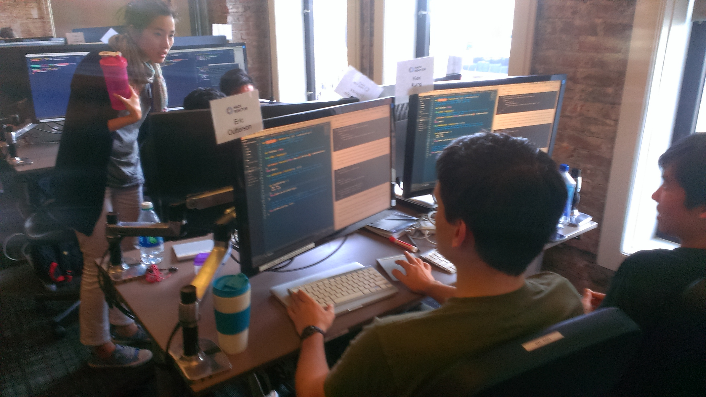
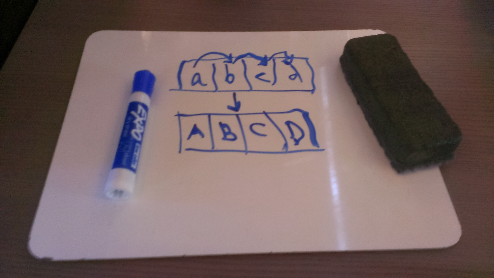
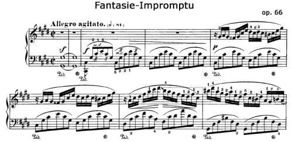
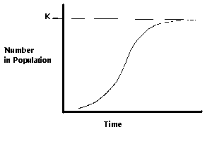

Pair Programming, Chopin, and Zombies
Composer, pianist
b. 1810 - d.
Pair programming is the primary learning model for the content-rich junior half of the Hack Reactor immersion program (learn more about the curriculum in my post about What We Learn at Hack Reactor). I remember that on my second day as a junior, I could already taste that pair programming was part of Hack Reactor’s secret sauce, and I wrote a draft of this blogpost. Now I’m a senior, watching the new juniors hash out their ideas at the pairing stations, and I feel it’s time edit and post.
Driver-navigator pair programming is a learning exercise that teaches you how to verbalize your progrmaming thoughts. This post is mostly about the educational usefulness. At the end of this post, I'll discuss real professional situations where this workflow can help a team get better results.

Here’s how it works: students find partners and sit as a pair in front of a duplicated monitor. One partner (the driver) types on her keyboard, the other (the navigator) talks out loud about his ideas for how to code the solution. The navigator is keeping up a constant chatter and bouncing ideas off the driver. If the navigator gets stuck and the driver has a good idea for how to proceed, the driver doesn’t type it herself - I like to call this “drive-igating". Drive-igating is risky because the navigator might lose engagement and not come out understanding the code. Instead, the driver can prompt the navigator through questioning, whiteboarding, or whatever fits her personal style. If there’s a true impasse, the two can switch roles: the driver becomes navigator, and explains her solution while her partner types.
This may sound like a lot of talking and not a lot of coding, which raises a question:
What language did we come here to learn, anyway?
It sounds silly to ask. We came here to learn JavaScript and the libraries and frameworks that are driving its renaissance. I am approaching Hack Reactor with some coding experience, but I’m also have experience learning Chinese language in total-immersion settings. Coming to Hack Reactor, I imagined that it would be total-immersion with code as the target language: a Middlebury for JS and its libraries and frameworks.
It turns out my analogy needs some tweaking. Never fear, we will come out Hack Reactor as JavaScript-native programmers. More importantly, though, we will know how to think as a software engineer, how to solve a problem, how to comment and organize code, how to use words that express our thought process, how to use GitHub to manage workflow across a team - skills that turn out to be super critical, with big consequences in debugging process (a.k.a. 80-90% of all programming). You could equally argue that our target language is a nebulous mix of English and JavaScript called “pseudocode”.
Pseudocode, the downbeat that holds pair programming together
Pseudocode is the interface between the intuitive, “navigator” side of programming and the detailed, syntax-heavy “driver” side. In pair programming, we role-play these two tasks.
// 1. The navigator starts with big-picture notions, the inklings of an algorithm.
// 2. She converts these ideas into a pseudocode and expresses them to the driver. This step is important.
// 3. The driver then translates from pseudocode into real code according to his mastery of JavaScript syntax.
The pseudocode (step 2) is the glue that holds the two roles together. After each minor victory or total impasse, we swap roles, ensuring that an intuitive thinker must sometimes deal with the misplaced semicolons, and a details-oriented thinker must practice thinking big-picture.
Speaking of pictures, here's what Step 1 looks like:

Then, move to Step 2:
// Takes an array of strings and puts them all in ALL CAPS
var arrayToALLCAPS = function(arr){
// Store results in new array
// Loop through input array
// Take element, upper-case it, and put it in the result array
// Return the result array
};
Notice how I structured the pseudocode as if it were real code. Protip: In the Sublime text editor, use ⌘+'[' and ⌘+']' to indent in outdent. It's better than SHIFT+TAB and ⌘+SHIFT+TAB because it works no matter whether you cursor is at the start of the line.
Finally, Step 3. Write the code beneath the pseudocode.
// Takes an array of strings and puts them all in ALL CAPS
var arrayToALLCAPS = function(arr){
// Store results in new array
var result = [];
// Loop through input array
for ( var i = 0; i < arr.length; i++ ){
// Take element, upper-case it, and put it in the result array
result.push( arr[i].toUpperCase() );
}
// Return the result array
return result;
};
// TEST:
console.log(arrayToALLCAPS(['Your', 'YouTube', 'video', 'is', 'lame']));
// logs [ 'YOUR', 'YOUTUBE', 'VIDEO', 'IS', 'LAME' ]
Bonus step: refactor using a native JavaScript Array method.
// Takes an array of strings and puts each one in ALL CAPS
var arrayToALLCAPS = function(arr){
return arr.map(function(string){
return arrayElement.toUpperCase();
});
};
Now it's looking nice!
Here's my analogy
Let’s say you want to master a piano piece, for example Chopin’s Fantasie-Impromptu in C# minor:

There’s a lot going on here. Chopin would use his left hand like a navigator, laying out the overall chord structure with broad patterns such as the sweeping arpeggios you see above. His right hand, meanwhile, would serve as driver, wowing the audience with technique: breakneck speeds, cadenzas full of irregular rhythms, chromatic runs which, upon compiling, land on perfect resolutions. If you, the pianist, try to do this all at once on first reading, then unless you are as good at it as this guy, you will fail. You will probably have to break it down into these steps:
// 1. Learn to play the left hand part really well.
// 2. Learn to play the right hand really well.
// 3. Counting very carefully on the downbeats, bring the two hands together.
Actually, forget what I just said. I guarantee you that when the pianist in the video was starting out with Fantasie-Impromptu, he had to use these steps, too. In fact, I can only think of one other algorithm that might possibly work:
// 1. Learn to play the *right* hand part really well.
// 2. Learn to play the *left* hand really well.
// 3. Counting very carefully on the downbeats, bring the two hands together.
The interface between the left and right hands is the macro-beat (in step 3). If you’ve played much Chopin, you know that the task of bring the two hands together is non-trivial. The left hand in Fantasie-Impromptu is playing triplets while the right flies around in quadruplets. Just try tapping your two index fingers on the table in front of you in this 3-against-4 pattern, and you can imagine how hard this is. Aligning the two rhythms a frustrating stop-and-start struggle, and you have to really feel that downbeat.
Programming is like Fantasie-Impromptu, and pseudocode is the downbeat. You need to be really good at translating English to pseudocode, and also really good at translating pseudocode to JavaScript. You can try to do it all at once, or you can leap forward in your learning of programming is to isolate these two separate mental functions and master each on its own. In the senior portion, we practice “white-boarding” interviews, which is a similar exercise: you have to first explain your thought-process in language-agnostic pseudocode before introducing any JavaScript.
I promised you zombies…
I’ve posted before about this aspect of Hack Reactor’s secret sauce. They implement a pretty simple algorithm:
// 1. Market you school to students with relevant prior experience (or just plenty of aptitude)
// 2. Do not specify what *kind* of prior experience
// 3. Bring them all to San Francisco and tell them to pair with a new partner every two days
Aspiring programmers come to Hack Reactor with a diversity of life stories. Some majored in CS, or at least took a few courses. Some worked before as front-end web designers. Some have worked at internet startups in non-coding roles. Some have experience whose connection to software engineering is not as obvious, but they can make uncanny analogies to their previous career. Each student has a vast experience which is made up of little tiny details that they couldn’t possibly rattle off each time they shake a classmate’s hand. How do we all emerge 13 weeks later as full-stack engineers? Let's analyze by tracking the path of each tiny piece of information across the system.
Imagine that an underpaid freelancer named X4898/QV-Strain001 Patient Zero enrolls in Hack Reactor. As it happens, bright young X/Q-SPZ is the only student in her cohort who knows that in the Sublime text editor, CTRL+⌘+UP and CTRL+⌘+DOWN are amazing shortcuts that will exponentiate your productivity and make you fall in love with Sublime. On the first day of class, she pairs up with a remedial Windows user (like myself) who doesn’t know what the squiggly key is supposed to do. He sees her make lines of code zip around to where she wants them, and asks her what the trick is. She shows him the new key binding, then bites into his skull and devours some brains.
In the next sprint, each of them finds a new unsuspecting partner to pair with. Within a week, code is flying like mad across the shared monitors of the pairing stations, and scary quarantine signs start to appear. One classmate who did ecology research in a previous life plots out a graph to explain all the screaming, and sees that it resembles a logistic growth curve:

Soon, the entire cohort will be infected.
Pair Programming for the Real World
Pair programming works great for learning to code. I’d be curious to work at a company that uses it for building real production code. There are definitely drawbacks: sometimes, the most advanced member of a pair has to slow down to help a less experienced partner reason through a problem. Still, a project manager can think of this as a short-term sacrifice. Last week, my 4-person team for a senior project decided to split into two pairs and spend a few days pair-programming. I believe the outcome by the end of the week was net positive: we got more features done, and it made for a smoother product.
This model definitely has potential outside the academic setting. It keeps the whole team on the same page, and ensures that everyone is engaged. Paired team members emulate each other’s strengths and help each other address weaknesses. Pair programming may reduce turnover, because as software engineers we are happier when we are learning, and many of us also enjoy teaching. Even when one developer does take an offer at another company, the remaining team members will know the code base. I can think of at least one team situation in my past life in consulting where I wish I had known about the driver-navigator model. We were managing a large base of legacy SAS code, and some intentional pairing could have really increased our long-term effectiveness.
Then again, sometimes time is too short. Please do not attempt to learn driver-navigator pair programming if you are bunkered down right now at the CDCs in Atlanta on the daring team of programmers and epidemiologists working around the clock to sequence the X4898/QV-Strain001 and create a vaccine before time runs out.
If you have tasty brains and want to be infected with a sweet productivity tip for Sublime, check out my post about build systems. If you have a productivity tip of your own that you’d like to share, leave a comment below: I’m not immune to suggestions.